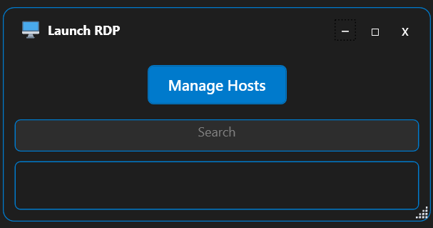
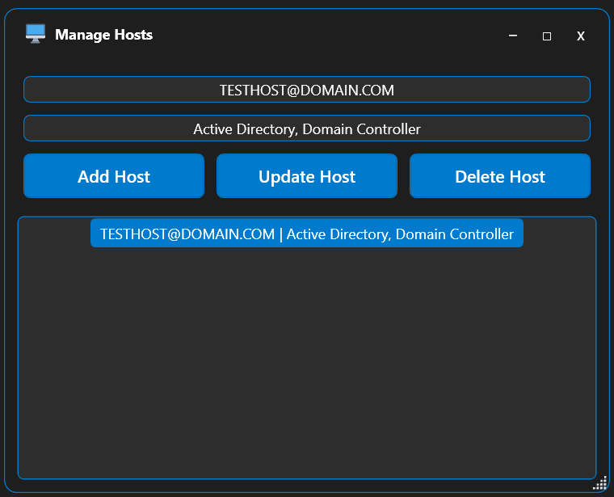
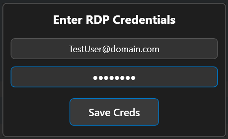
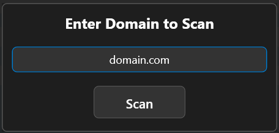

SwatLauncher: Remote Desktop Connection Manager
Version: 1.0.0
SwatLauncher is a Windows application designed to simplify and enhance the management of Remote Desktop Protocol (RDP) connections. This tool offers a user-friendly interface for IT professionals and system administrators who frequently access multiple remote Windows servers.
Key Features:
- Secure Credential Management: SwatLauncher leverages Windows Credential Manager to securely store and manage RDP credentials, eliminating the need for repetitive login input.
- Active Directory Integration: SwatLauncher can scan your Active Directory domain to automatically populate a list of Windows servers, complete with their Fully Qualified Domain Names (FQDNs) and descriptions.
- Efficient Server Management: Users can easily add, update, or delete server entries through an intuitive interface.
- Quick Search Functionality: A responsive search feature allows users to quickly find and connect to the desired server by filtering through hostnames and descriptions.
- One-Click RDP Connections: Double-clicking a server in the list automatically launches an RDP session, streamlining the connection process.
- System Tray Integration: SwatLauncher can be minimized to the system tray, allowing for quick access while keeping your desktop clutter-free.
- Dark Theme Interface: A sleek, dark-themed UI reduces eye strain during extended use and provides a modern look and feel.
- Window Position Memory: The application remembers its last position and size, providing a consistent user experience across sessions.
Technical Highlights:
- Developed using C# and WPF, leveraging the power and flexibility of the .NET Framework.
- Utilizes Windows API calls for advanced functionality like window placement management.
- The application stores hostname information in a local CSV file under 'servers.csv' for quick access and easy portability.
Useful Tips
- Credential deletion: Holding the shift key on the Credential Input window allows you to delete your credentials from Windows Credential Manager.
- CSV file deletion: Holding the shift key on the Manage Hosts window allows you to delete the CSV file entirely.
- Exit the application: To exit the application, just close/minimize the application and right-click the icon in the system tray.
Screenshots




Download SwatLauncher
SHA256 Checksum:
fbddc8891cd648e80942e8617d9ab94a5489f665dff73fbfea70b29a014f6214
Click to copy
Note: This executable is not digitally signed.
I'm considering obtaining a code signing certificate in the future to enhance security. Your feedback and usage of the tool will help inform this decision!
Have feedback? Email me at feedback@swatto.co.uk